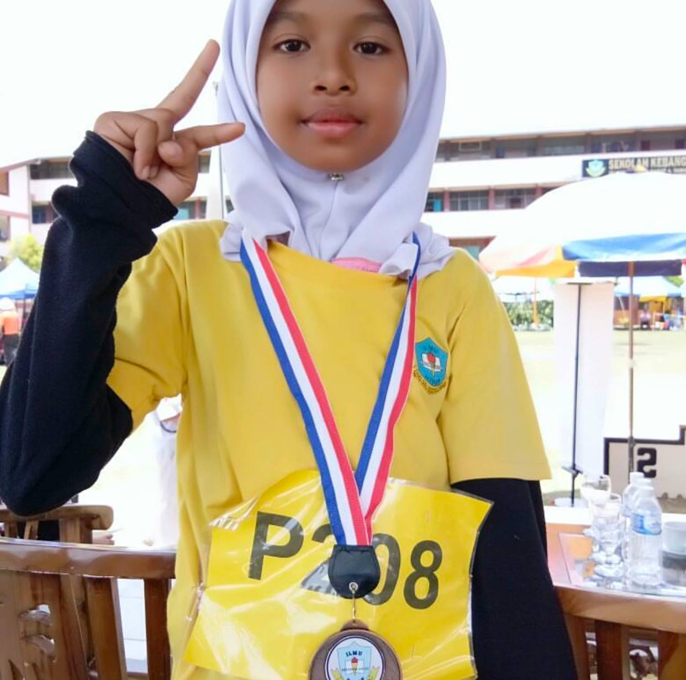
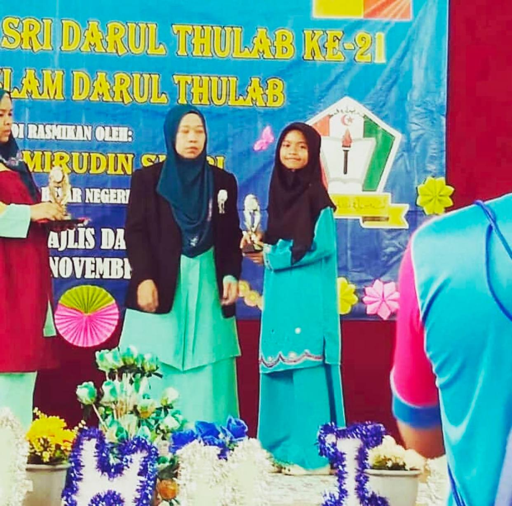
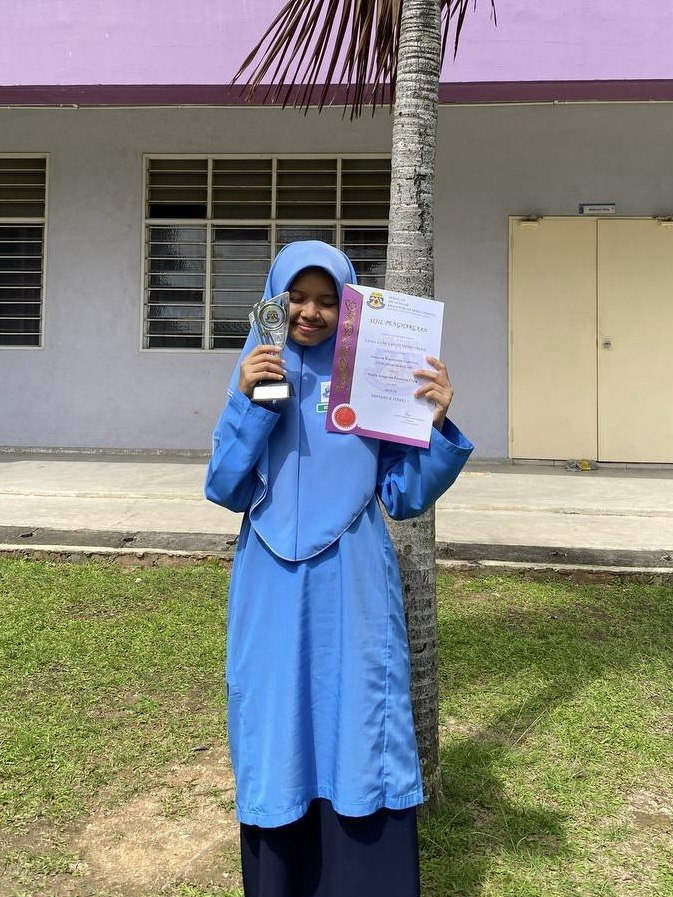
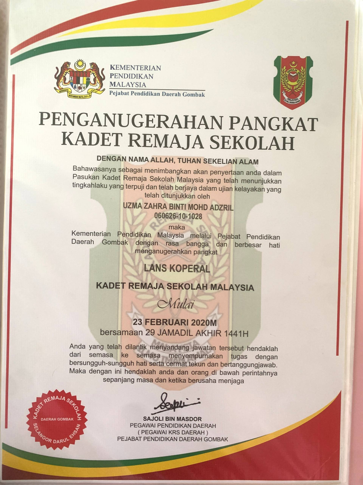
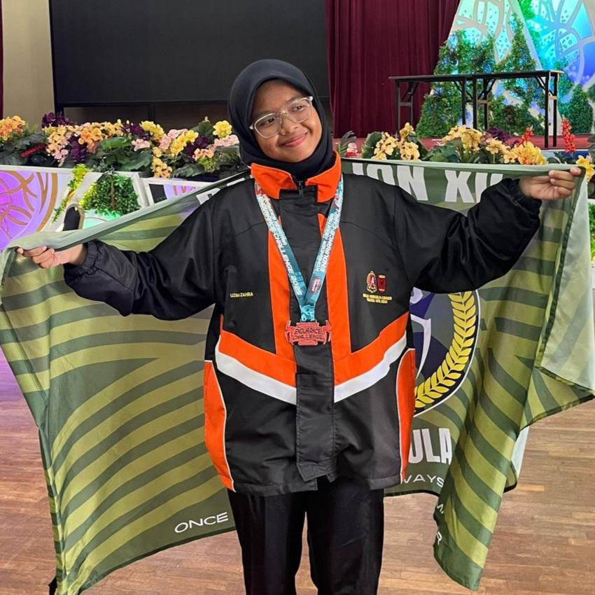
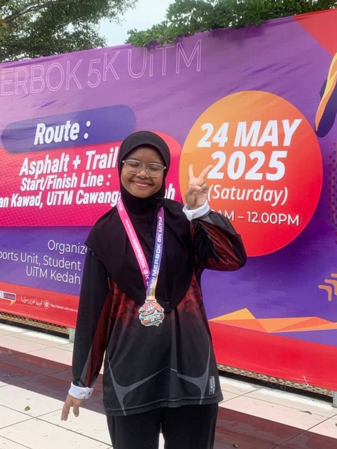
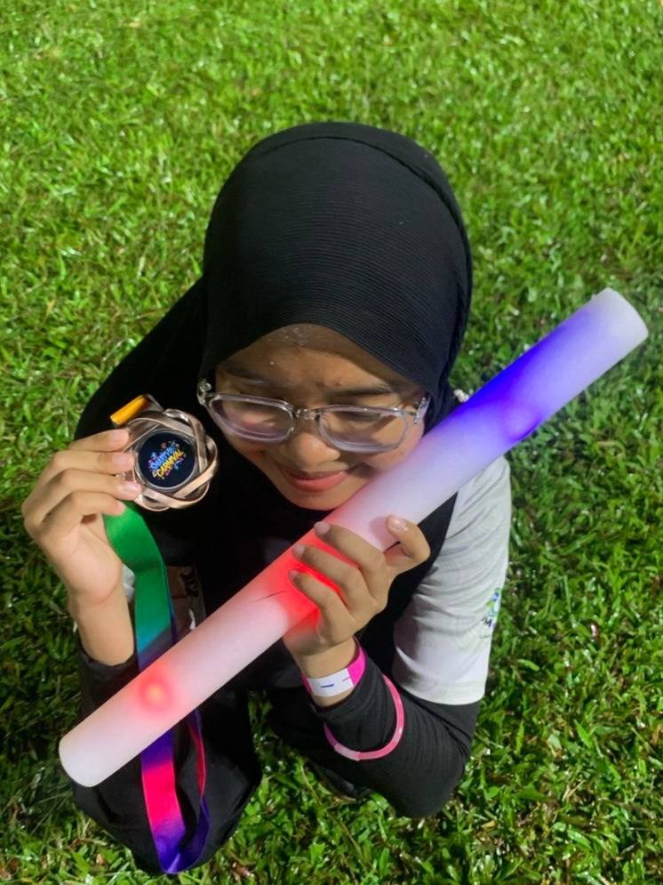
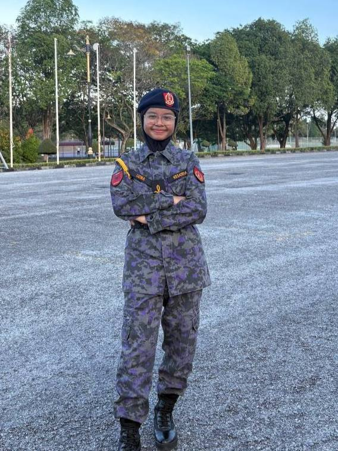

✧･ﾟ: *✧･ﾟ:* MY PROUD ACHIEVEMENTS✧*:･ﾟ✧
My Awards 🏆
Welcome to my achievements page! Throughout my journey as a student and an individual, I have always strived to give my best in everything I do. Here are some of the meaningful milestones, awards, and recognitions that I have achieved over the years. Each of them represents hard work, dedication, and unforgettable memories! (⸝⸝> ̫ <⸝⸝)
ELEMENTARY SCHOOL ACHIEVEMENTS
SK TAMAN SAMUDRA
During my primary school years, I was not very active as I was quite introverted, but I always tried to step out of my comfort zone. Even though my achievements were not outstanding at that time, I am still proud of myself and how far I have come.


HIGH SCHOOL ACHIEVEMENTS
SMK SERI GOMBAK
At this stage, I began to gain the confidence to be more active in various school activities, one of which was serving as a school prefect. I held the position of Data Exco from Form 2 until Form 5 and was honoured with an award as one of the school’s outstanding student leaders. To me, this award was very meaningful and motivated me to become more active and confident in myself.


DIPLOMA ACHIEVEMENTS
UiTM Kedah
After entering university, I felt very excited because I had the opportunity to join various clubs and participate in many available programs. It was during my university years that I truly discovered my abilities and potential.



